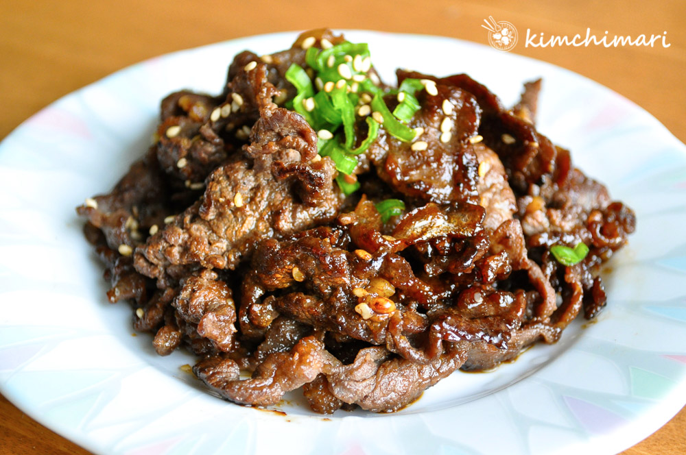

Asian Fire Meat

Description
For a great tasting beef dish from Asia, fire meat is delicious and easy to prepare.
Ice cold beer is the beverage recommended with fire meat.
ingredients
- ½ cup soy sauce
- 2 tablespoons brown sugar
- 3 cloves garlic, crushed
- 1 large red onion, chopped
- ground black pepper to taste
- 1 teaspoon red pepper flakes
- 2 tablespoons sesame seeds
- 2 leeks, chopped
- 1 small carrot, chopped
- 1 pound beef round steak, sliced paper thin
Steps
- In a large bowl, mix together the soy sauce, sesame oil, brown sugar, garlic,
and red onion. Stir in the black pepper, red pepper flakes, sesame seeds, leeks
and carrot. Mix in the meat by hand to ensure even coating. Cover and let marinate
for at least 2 hours or overnight.
- Brush the bottom half of a wok with cooking oil, and heat over medium-high heat.
Put in all of the meat and marinade at once, and cook stirring constantly. The
meat will be cooked after just a few minutes. Remove from heat and serve with rice
or noodles. For Korean-style fire meat, roll the meat mixture up in a leaf of red lettuce.